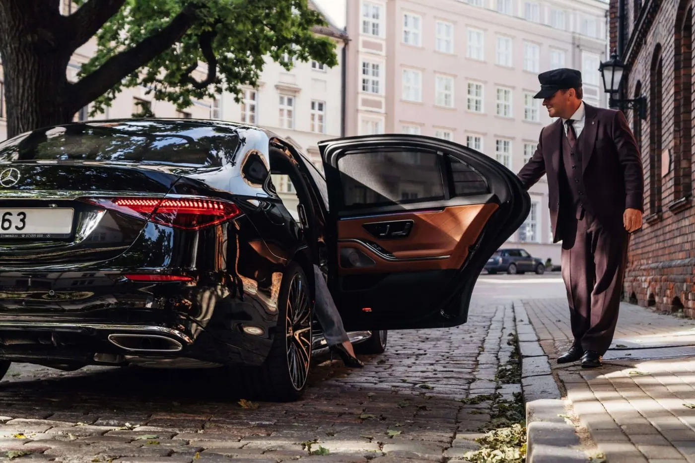

If you plan your next big business trip to the Big Apple, you’re in for a treat – and potentially a few gray hairs. But fear not, intrepid corporate warrior! We’re here to help you navigate the bustling streets of New York City with the grace of a seasoned Wall Street tycoon and the style of a Broadway star.
Corporate travel in New York City doesn’t have to mean squeezing into crowded subway cars with your briefcase acting as a shield or hailing taxis with the desperation of a trader on the stock exchange floor. Picture this instead: gliding through the city in a sleek limousine, turning heads faster than the NYSE ticker, all while you prepare for your next big meeting in blissful comfort.
At Accredited Limo, we understand that every minute counts in a city that never sleeps. That’s why we’re here to elevate your corporate travel experience in New York City from “taxi cab confessions” to “limousine dreams.” So buckle up, adjust your power tie, and get ready to conquer NYC like the business mogul you are – just with better wheels and without the cab driver’s life story.
Ready to turn the city that never sleeps into your boardroom on wheels?
Let’s dive into how you can make your next corporate trip to New York City smoother than a fresh schmear on a bagel.
Mastering the Art of Corporate Travel in NYC
Mastering the art of corporate travel in NYC is like learning to tango in Times Square – it takes finesse, strategy, and a dash of audacity. While you could go it alone, partnering with a seasoned corporate travel agency can turn your business trip from a potential comedy of errors into a well-choreographed performance.
These wizards of wanderlust know the city’s rhythm, from Wall Street’s pulsing heartbeat to Silicon Valley’s creative buzz. They can help you sidestep the tourist traps and navigate straight to the power players’ paradises. With their insider knowledge, you’ll breeze through the city’s opportunities and challenges, transforming your NYC business adventure into a masterclass of efficiency and style.
Whether you’re sealing deals in the heart of Midtown or building connections in the trendy neighborhood of NoHo, bear in mind that in a bustling city where time is precious, a corporate travel agency serves as your hidden advantage, transforming the fast-paced urban environment into a source of leisure and enjoyment.

Streamlining Your Business Itinerary
In a city that moves at the speed of light, streamlining your business itinerary isn’t just bright – it’s survival. New York City waits for no one, not even the CEO with the shiniest shoes. That’s where savvy business travel management comes into play. Picture this: you’re zipping from a power breakfast at the Loeb Boathouse to a midday meeting in the Chrysler Building, all without breaking a sweat or your stride. It’s not magic; it’s meticulous planning with a New York twist.
Your itinerary should be as sleek and efficient as the city’s skyline. Start by clustering your meetings geographically – you don’t want to be ping-ponging between boroughs like a lost tourist. Factor in those infamous New York minutes (spoiler alert: they’re longer than 60 seconds) for travel time between appointments. And for the love of Broadway, build buffer time for the unexpected – because in this city, the unexpected is the only thing you can expect.
Remember, your business travel management strategy can make or break your trip to New York City. So plan smart, move fast, and always know where your next cup of coffee comes from. After all, in a city that never sleeps, you’ll need all the energy you can get to keep up with its relentless pace.
Time-Saving Transportation Hacks
Listen up, time-crunched titans of the industry! In the urban labyrinth of New York City, mastering transportation is like having a superpower. Forget about battling rush hour traffic or playing subway roulette. Here are some insider time-saving transportation hacks that’ll have you zipping around the city like a local CEO on a mission.
First, embrace the beauty of reverse commuting. While the masses flood into Manhattan, you’ll cruise against the tide in your Accredited Limousine, sipping your artisanal cold brew and enjoying the skyline view. It’s like having your private express lane to success.
Next, become best friends with your smartphone’s traffic apps. They’re like having a psychic New York cabbie in your pocket, minus the colorful commentary. Use them to predict travel times and reroute on the fly when the city throws you a curveball (and it will, trust me).
Here’s a golden nugget: don’t avoid the good old-fashioned pedicab for those infamous crosstown treks. It might feel touristy, but nothing beats weaving through gridlocked traffic while you catch up on emails. Just think of it as your open-air mobile office with a side of adrenaline.
And remember, in New York, sometimes the fastest route between two points isn’t a straight line – it’s underground. The subway can be your secret weapon for beating surface traffic, especially during peak hours. Just be prepared to perfect your “don’t talk to me” face.
With these hacks in your arsenal, you’ll navigate New York City’s concrete canyons like a pro, leaving your competitors in the dust (or, should we say, in the taxi queue). Now go forth and conquer, you magnificent time-bending master of the metropolis!
Power Lunch Spots for Dealmakers
Alright, movers and shakers, let’s talk power lunches in the city where deals are sealed faster than you can say “pastrami on rye.” New York’s power lunch scene is where business meets pleasure, and your choice of venue can speak volumes before you even open that pitch deck.
First up, we’ve got The Grill in the iconic Seagram Building. It’s like stepping into a Mad Men episode but with better Wi-Fi. The martinis are dry, the steaks are juicy, and the deals? They practically close themselves.

To achieve a contemporary atmosphere, visit Manhattan. Elevated 60 floors high, it offers breathtaking views that will make your clients overlook that they are finalizing agreements. However, ensure they don’t become too captivated by the panoramic scenery – remember, there is business to attend to.
Craving something with an international flair? Nudge your way into Le Coucou. It’s French, it’s fancy, and it’s perfect for impressing that potential European partner. Just practice pronouncing “coq au vin” before you arrive.
For the eco-conscious dealmaker, ABC Kitchen is your go-to. Organic, locally sourced, and seriously delicious. It’s like Mother Nature is your silent partner in this negotiation.
And if you want to really wow them, book a table at Eleven Madison Park. It’s not just lunch; it’s a culinary experience that will have your clients signing contracts between courses.
Remember, in New York, where your lunch is almost as important as what you’re lunching about. Choose wisely, and may the fork be with you as you navigate these culinary corridors of power!
Impressing Clients in the Big Apple
Alright, high-flyers, let’s talk about turning the Big Apple into your playground of persuasion. Impressing clients in New York City is an art form, and you’re about to become the Picasso of corporate schmoozing.
First things first, forget about the tourist traps. Your clients have seen enough I ❤ NY t-shirts to last a lifetime. Instead, think exclusive, jaw-dropping, and “How did you even know about this place?”

Start by ditching the stuffy boardroom for a meeting with a view. Book a private capsule on the Edge at Hudson Yards. Nothing says “we’re going places,” like floating 100 stories above the city. Just try not to look down when discussing those profit margins.
For dinner, skip the apparent steakhouses and opt for a chef’s table experience at a Michelin-starred restaurant. Watching a culinary maestro work their magic will spark some creative deal-making. Plus, saying no to someone who treated you to a 12-course tasting menu is hard.
But here’s the authentic secret sauce: personalization. Did your client mention they’re a jazz buff? Surprise them with VIP tickets to a secret show at a hidden speakeasy. Art lover? Arrange a private after-hours tour of MoMA. Sports fanatic? How about meeting a Yankees legend at your next lunch?
Remember, it’s not just about winning and dining in New York. It’s about creating experiences as unforgettable as the deals you’re trying to close. So go ahead, pull out all the stops. In the city where anything is possible, your only limit is your imagination (and maybe your expense account).
Now go forth and dazzle, you magnificent maestro of client relations!
Cultural Experiences to Wow International Guests
Welcome to New York, where culture isn’t just a buzzword—it’s the city’s lifeblood. When it comes to wowing your international guests, forget about the Statue of Liberty selfies and Times Square madness. We’re going off the beaten path, folks!
First stop: the immersive theater experience “Sleep No More.” It’s Macbeth meets film noir, set in a fictional 1930s hotel. Your guests will don masks, explore dimly lit rooms, and possibly question reality. Nothing says “Welcome to New York” quite like getting lost in a surreal, Shakespearean dreamscape, right?
For the art aficionados, skip the Met crowds and head to The Frick Collection. It’s like stepping into a wealthy New Yorker’s private art collection—because that’s precisely what it is. Bonus: impress your guests with the fun fact that the building was once the residence of steel magnate Henry Clay Frick. Talk about a home office upgrade!

Music lovers? Ditch the obvious choices and take them to a secret piano bar in the East Village. Picture this: intimate setting, craft cocktails, and spontaneous sing-alongs with Broadway stars on their night off. It’s like being in a real-life NYC rom-com, minus the meet-cute and some serious business networking.
Book a private Lower East Side food tour for a taste of quintessential New York with a twist. From knishes to dim sum to the best pizza you’ve never heard of, it’s a culinary journey through the city’s immigrant history. Pro tip: wear stretchy pants.
And for the grand finale? A helicopter tour at sunset. Yes, it’s extravagant. Yes, it’s a bit cliché. But watching the city light up as you soar above the skyscrapers? That’s the kind of New York magic that turns international guests into lifelong clients.
Remember, in New York, cultural experiences aren’t just entertainment—they’re your secret weapon in the art of international business. Now go forth and culturally conquer, you cosmopolitan corporate warrior!
Tech-Forward Amenities for the Modern Executive
Welcome to the future, you sleek, tech-savvy road warriors! In the concrete jungle of New York, where even the pigeons probably have their own Instagram accounts, staying ahead of the tech curve isn’t just bright—it’s survival.
Let’s start with your mobile command center, shall we? Forget those run-of-the-mill business centers. We’re talking about co-working spaces that would make Silicon Valley jealous. Picture this: you walk into a place like The Farm SoHo, where the Wi-Fi is faster than a New Yorker’s walking pace (and that’s saying something). Need to make a quick video call? Duck into a soundproof pod that’s more futuristic than a sci-fi movie set.
Now, let’s talk about your home away from home. Hotels like YOTEL New York are basically what happens when Star Trek designs an accommodation. Automated check-in? Check. Robotic luggage storage? You bet. At the push of a button, your bed morphs from business mode to snooze central faster than you can say “power nap.” It’s like sleeping in the future, minus the flying cars (we’re working on it).
But wait, there’s more! Need to impress clients with a presentation? Ditch the dull projector and book a meeting at Convene. We’re talking touch-screen displays, virtual reality setups, and enough tech to make James Bond’s Q branch look like a garage sale.
And let’s not forget about staying connected on the go. With LinkNYC kiosks scattered throughout the city, you’re never more than a few steps away from super-fast Wi-Fi and USB charging ports. It’s like the whole city is one giant, tech-infused office.
Finally, there’s BLADE for those “I need it yesterday” moments. Think Uber, but for helicopters. Because nothing says “I’m a modern executive” quite like choppered-in documents.
Remember, in New York, being tech-forward isn’t just about having the latest gadgets—it’s about leveraging technology to stay ahead of the game. So go forth and conquer, you magnificent, digitally-enhanced business maverick!
Elevating Your Corporate Image with Premium Transportation
Buckle up, buttercup, because we’re about to take your corporate image from coach to first class faster than you can say “expense report.” In the dog-eat-dog world of New York business, your mode of transportation isn’t just about getting from point A to point B—it’s a statement, a power move, a four-wheeled billboard screaming, “I’ve arrived, and I mean business!”
Let’s face it: nothing says, “I’m here to close deals and chew bubblegum, and I’m all out of bubblegum,” quite like stepping out of a sleek, black limousine. It’s the difference between making an entrance and making an impression. While your competitors still argue with cab drivers or do the subway shuffle, you’ll glide through the city streets like a shark in a sea of minnows.

But this isn’t just about showing off (okay, maybe it’s a little about showing off). Premium transportation is your secret weapon in the corporate arms race. Need to prep for a big meeting? Your limo just became a mobile war room. Want to impress a client? Nothing says “We value your business” quite like a chauffeur-driven ride to dinner. Trying to close a deal? The privacy of a premium vehicle beats a noisy restaurant any day.
And let’s talk about productivity. Your limo is a piggy bank on wheels in a city where time is money. While you’re stuck in traffic, you’re not just sitting there—you’re working, strategizing, or maybe even power napping (hey, we won’t judge). It’s like adding hours to your day without bending the laws of physics.
But here’s the kicker: in a city that’s all about the green (and we’re not just talking money), opting for a premium fleet with eco-friendly options shows you’re not just a business badass but a responsible one, too. It’s like saying, “Yeah, I’m successful, but I also care about more than just the bottom line.” Cue the slow clap.
So, are you ready to elevate your corporate image faster than a New York minute? Remember, your ride is your resume in the city that never sleeps. Make it count, make it premium, and, for goodness sake, make it impressive. Now go forth and conquer, you magnificent, limo-riding legend!